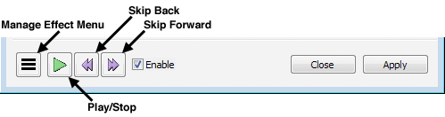

Real-time preview of effects
Currently, the only effects shipped with Audacity that support real-time preview are Phaser, SC4 and Wahwah, but you can download additional LADSPA, LV2, VST and Audio Unit (for Mac) effects, almost all of which will support real-time preview.
Real-time preview differences
An effect that supports real-time preview is different from regular effects in the following ways.
- It can be opened when audio is playing or paused.
- It can be opened even when no audio is selected, as long as the track is selected.
- One regular effect can be opened and applied while a real-time preview effect is open but not playing.
- Real-time preview settings can be changed while audio is playing.
- When in Graphical Mode, live meters or graphs should respond when audio is playing.
- You can start and stop audio playback, change the selection, apply gain or pan to tracks or Mute or Solo them while the effect dialog is open. You can use the shortcuts Alt + F6 or Alt + Shift + F6 (use the Option key instead of Alt on Mac) to move forward or backward respectively between the effect and the main project window.
- A selection must be present to apply the effect.
- You will hear a preview of applying the effect to the selected track(s). Unselected tracks will not have the effect applied to them but unlike in regular effects, unselected tracks will still be heard unless you use the Mute/Solo state to silence them.
- The effect may be applied without closing the effect.
- User presets may be saved and loaded. As long as you apply the effect, changes you make to an effect's settings will be restored for use next time you launch Audacity.
Real-Time preview with graphical interface
When you open an effect that supports real-time preview with graphical interface it will have these control icons at the bottom of the effect dialog.
- 
-
 Manage Effect menu:
Manage Effect menu:
- User Presets: If any user presets exist for this effect this menu will list them. Select one of the user presets to load it into the effect.
- Factory Presets: If any factory presets exist for this effect this menu will list them. Select one of the factory presets to load it into the effect.
- Delete Preset: Select this option to delete a previously saved user preset.
- Save As... Select this option to save the current settings as a user preset.
- Import... Select this option to import a presets file (or multiple files for Audio Unit effects on Mac).
- Export... Select this option to export a presets file (or multiple files for Audio Unit effects on Mac). Export lets you share presets for this effect with other users on your computer or to move them to another computer.
Many VST effects support import and export of named factory presets in a single FXB file, but LADSPA and LV2 effects do not support import and export of presets at all. Please click the links in the Options... section below to see a full explanation of presets features for each type of real-time preview effect.
- Options... Displays the options dialog for this type of effect. See the sections for each type of effect for a description of the options available.
- About: Displays the effect type, effect name, version, vendor, and description.
-
Play/Stop: Click this button to begin playback. It changes to the Stop button
. Click it again to stop playback. If there is no selection in the track(s), restarting playback with this button will restart from the original cursor point, just like pressing Play in Transport Toolbar. However if there is a selection you can use the real-time preview Play/Stop button as a Pause button, pressing Stop to stop playback then Play to resume from where you stopped playback inside the selection.
If you stop playback inside a selection with this button then do want to restart playback from the start of the selection, either click the "Skip Backward" button (see below) followed by the real-time preview Play button, or use the Play button in Transport Toolbar in the main project window.
- Skip Backward: When playback is stopped, clicking this button will cause the next playback in the effect to start from the start of the selection. During playback, each click of this button will perform a short seek back. You cannot seek back behind the editing cursor or behind the start of the selection.
- Skip Forward: When playback is stopped, clicking this button will cause the next playback in the effect to start from the end of the selection. You can use this to compare subsequent audio which you may not want to apply the effect to. During playback, each click of this button will perform a short seek forward.
- Enable: This checkbox contains a checkmark by default , which enables the effect.
Remove the checkmark to disable the effect (also known as bypassing the effect). Disabling makes the audio play as if the effect was closed and the effect's controls will no longer change the audio. Disabling and enabling is a convenient way to compare the "dry" (non-affected) sound with the "wet" (affected) sound while it plays in real-time.
- Click this button to close the effect dialog. Closing the effect without pressing "Apply" (below) does not save the current settings of the effect for use next time you launch Audacity.
- Click this button to apply the effect to the selected audio and save the current settings of the effect for next time you launch Audacity. The effect dialog will remain open after the effect is applied.
Real-Time preview with text-based controls
If you use the Manage button  then Options... to disable graphical interface, the Manage button and the Real-Time Preview playback controls display as text-based buttons instead, as in the below image:
then Options... to disable graphical interface, the Manage button and the Real-Time Preview playback controls display as text-based buttons instead, as in the below image:

{kind=link}
{kind=link}
As with the graphical interface, a single button starts and stops playback, reading when there is no playback and when there is playback.
Text-based controls and textual interface will display automatically even if graphical interface is chosen if the effect does not provide a graphical interface of its own.
- M to open the Manage menu, P to Start or Stop playback, B to skip backward, F to skip forward, E to enable/disable the effect.
Notes and Limitations
- Currently, real-time preview does not compensate for the latency many plug-ins introduce in order to provide smooth processing of audio. Real-time preview therefore may have small gaps in the audio, or timing artifacts may be audible when previewing multiple tracks. However by default Audacity compensates for latency when applying the effect (unless you disable compensation in the options for the effect).
Therefore if you hear latency problems in real-time preview, apply the effect and close it, then listen to the result. If you do not like the result you can simply use the command, or its shortcut Ctrl + Z (on Mac ⌘ + Z), open the effect and try a different setting.
- So that real-time preview plays how the audio will sound immediately after applying the effect, any existing volume envelopes or Time Tracks and the positions of gain or pan sliders are applied before preview is heard.